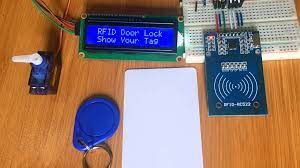

1. RFID BASED DOORLOCK SYSTEM USING ARDUINO
An RFID-based door lock system using Arduino is a
securitymechanism that utilizes Radio Frequency
Identification (RFID) technology and Arduino
microcontroller to control access to a door
or any other entry point. The system consists of
an RFID reader, RFID tags or cards, an Arduino board,
and an electric door lock.

2. OTP BASED CARDLESS TRANSACTION USING ATM
We have proposed the model named as
"HALLI SEVA PAVATI" in which the customers
can transfer amount from his/her account to
the beneficiary account using his/her account
number and IFSC code in the ATM machine.
Where there will be a 2 steps of authentication
i.e APIN and OTP.